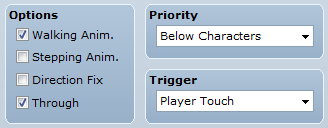
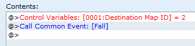
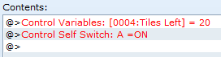
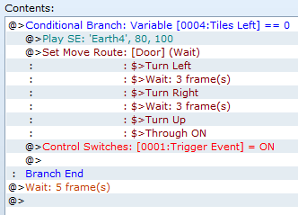

Crumbling Floor Puzzle (Turn-Based)
Engine: RPG Maker VX Ace and MV
Difficulty: Easy
Function: A puzzle that triggers an event when all tiles have been stepped on, and each tile may only be stepped on once.
Demo: (VX Ace) Click here to Download
Introduction
This is a tutorial on making a turn-based crumbling floor puzzle, just like the Sootopolis Gym puzzle in Pokemon Ruby/Sapphire/Emerald. If you are not familiar with the puzzle, stepping on all the floor tiles will trigger an event, however each tile may only be stepped on once. Stepping on a tile twice will drop the player into another room.
Because this puzzle is made with events, it requires no additional scripts, making it is possible to use this in other RPG Maker versions with some modifications to script calls.
The demo (source code) is made available in the link above.
If your game uses followers, it is recommended to hide them for this puzzle.
The Gist
We'll be using multiple events to make this puzzle: the floor tiles, the controller, and the triggered event. The floor tiles are the tiles we need to step on to complete the puzzle. The controller will set up the puzzle so that it'll work. It will also check to see if all tiles have been stepped on, and if so, activates the triggered event. The triggered event is just a door in this tutorial, but it could be something like a chest or a bridge as well.
What We Will Need
- 4 Variables: Destination Map ID, Map X, Map Y, Tiles Left
- 1 Switch: Trigger Event
- 3 Common Events: Fracture Tile, Fall, Reset Puzzle
- 2 Maps: Puzzle Room, Basement
- Graphics: Cracked Floor and Hole Sprites (included in the demo, link above)
Making the Common Events
The puzzle relies on a lot of copy/pasting of the floor tiles, so common events are the best choice here.
In the common events tab in the Database, make three new common events called "Fracture Tile", "Fall", and "Reset Puzzle". They do not have a trigger or a condition switch.
Fracture Tile
"Fracture Tile" is the event that occurs when the player steps onto a tile. In this case, we'll want to play a sound effect to let the player know what they've done, and set Self-Switch A to On. Then, decrement (subtract 1) the "Tiles Left" variable.

Fall
"Fall" is the event that occurs when the player steps onto a tile that has already been stepped on. Play your desired sound effects and set Self-Switch B to On. This will show the hole graphic beneath the player. Then, fade out the screen so that the player does not see events reverting. Set Self-Switch B to Off. Call the common event "Reset Puzzle". Then, set the "Map X" and "Map Y" variables to Game Data -> Character -> Player's Map X/Y. Transfer the player with "Designation with variables" option and the variables "Destination Map ID", "Map X", "Map Y". Fade in the screen.

Reset Puzzle
"Reset Puzzle" is the common event called by "Fall" and other events that reset the puzzle. We will be resetting all the self-switches so that the puzzle is reset. In VX Ace, the script call to do so is:
(1..21).each do |event_id|
$game_self_switches[[@map_id, event_id, 'A']]
endFor MV users: You can reset the self-switches with this:
for (var event_id = 1; event_id <= 21; event_id++){
$gameSelfSwitches.setValue([$gameMap.mapId(), event_id, 'A'], false);
}After resetting the self-switches, you will also need to turn off the switch "Trigger Event", in case the player stepped on all the tiles but failed to reach the trigger.
Alternatively, if you have a script/plugin that resets events, you can use that instead.

Making the "Puzzle Room" map
To make things easier, do not add any events until you have finished placing all the crumbling tiles.
We'll be setting up the map now. Make the first map, "Puzzle Room", and mark out the puzzle area first and keep count of the number of tiles used as it will be used later. In this tutorial, the puzzle area is designated by the ice tiles. You can put as many tiles as you like, but keep in mind that having too many events on a map causes lag, and also the player's feeling of tedium caused by failing the puzzle. When you are done, duplicate the map and keep in mind the ID of the duplicated map. This is the "Basement" map that the player will fall into if they fail the puzzle.
The Crumbling Floor Tile
Create a new event: the floor tile. On the first page, set no graphic, check "Through", put Priority to "Below Characters", and Trigger to "Player Touch". In the contents, call Common Event "Fracture Tile".
On the second page, set the graphic to the cracked tile, check "Through", put Priority to "Below Characters", and Trigger to "Player Touch". Check for "Self-Switch A is ON" in the conditions. In the contents, set variable "Destination Map ID" to the ID of the "Basement" map. Then call common event "Fall".

On the third page, set the graphic to the hole, check "Through", put Priority to "Below Characters", and Trigger to "Action Button". Check for "Self-Switch B is ON" in the conditions. You can leave everything else blank, as this page is purely graphical.
Here's what the map looks like so far, with just one event. The event we just made is on the bottom left corner of the puzzle area.
Now, copy and paste this event on top of all the puzzle area. The order of the copies does not matter.
The Controller Event
Create a new event: the controller. Place it anywhere out of reach. On the first page, set no graphic, put Priority to "Below Characters", and Trigger to "Autorun". In the contents, set variable "Tiles Left" to how many tiles you used in the puzzle area. In this tutorial it is 20. Set Self-Switch A to ON.

On the second page, set no graphic, put Priority to "Below Characters", and Trigger to "Parallel Process". Check for "Self-Switch A is ON" in the conditions. In the contents, make a conditional branch that checks if "Tile Left" is equal to 0. In the branch, play your sound effect, then trigger your triggered event. Ours is a door, so we make the door animate. Set the switch "Trigger Event" to ON. Outside of the branch, add a wait for 5 frames to help improve performance.

On the third page, set no graphic, put Priority to "Below Characters", and Trigger to "Action Button". Check for "Switch 'Trigger Event' is ON" in the conditions. This effectively disables the controller, as the triggered event has already been activated.

The Triggered Event
Now that we have the controller done, we need to make the triggered event. It'll be a door in this case. The first page of the door doesn't have to be special.
On the second page, set the opened door graphic, put Priority to "Below Characters", and Trigger to "Player Touch". Check for "Switch 'Trigger Event' is ON" in the conditions. In the contents, call "Reset Puzzle" and handle transfer however you wish.

The Drop Zone: "Basement" map
On the duplicated map, make sure the drop zone (the puzzle area from the "Puzzle Room" map, marked in red in the picture below) is completely passable (i.e. nothing blocking movement). Change up the duplicated map as you like, but make sure that the drop zone does not move or gets shifted. Put a method of returning to the Puzzle Room somewhere in this room. In this case, we used a ladder. Add transfers to both maps if you wish, but make sure that all transfer events leading out of the puzzle room needs to call common event "Reset Puzzle"!
Final Result
Here's the puzzle in action!
Taking it Further
If you want to have multiple puzzle rooms, you need to change the "Reset Puzzle" common event to include the new rooms. You can do something like checking for another variable, such as Puzzle Room number, and using a conditional branch to change resetting logic depending on the room. Remember to make new Basement maps as well, and change the Destination Map ID setter in page 2 of the crumbling floor event.

You can add obstacles or open spaces to increase the complexity of your puzzle. A good thing with this sort of puzzle is that it's possible for multiple solutions to emerge.
You could also make it thematically different, like using light/dark teleportation panels like in Gate of Providence.
Conclusion
I hope this tutorial was helpful. You are free to use this puzzle or any variation of it in your projects! Spice up your dungeons, but remember not to take it too far!
If you enjoyed reading this post, feel free to follow us on Twitter to get updates on our games and blog posts!